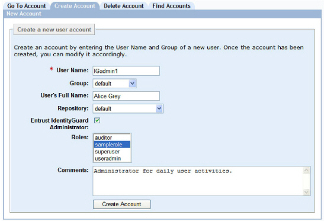

|
IdentityGuard Server 13.0 Administration Guide |
|
IdentityGuard Server 13.0 Administration Guide |
You create a new administrator by assigning one or more roles to a regular user (a user without any roles) and setting a password for the new administrator. The built-in roles provided with Entrust IdentityGuard permit only an administrator with the superuser role to assign roles to a user (see Built-in roles).
Any administrator with a role that includes the userSet, userSetRole and userPasswordCreate permissions can also create a new administrator from an existing user. Creating an administrator directly also requires userCreate permission.
The ability to assign roles should be limited to as few administrators as possible.
The roles an administrator can assign to a user are limited to the roles that appear in the administrator’s roles list; that is, you cannot assign a role that you have not been granted permission to assign to others. The user being promoted to administrator must be in one of the groups listed in the administrator’s roles. You can move the new administrator to a different group as long as the target group is in one of the groups listed in the administrator’s roles; that is, the group list is associated with one or more of the roles belonging to the administrator.
Create administrators so that people in your organization can access the Administration interface and manage your users, and so that client applications can access the Entrust IdentityGuard Administration API.
Note: Before you create administrators, make sure all the roles you need already exist. You may have to create the necessary roles before proceeding. See Configuring roles. You can use the system default roles.
To create a new administrator
1.  Log
in to the Entrust IdentityGuard Administration interface as the administrator.
Log
in to the Entrust IdentityGuard Administration interface as the administrator.
2. Click User Accounts on the home page.
3. Click the Create Account tab.
4. Enter a name in the User Name field.
5. Enter the administrator’s full name in the User’s Full Name field.
6. (Optional) Select a group for the administrator to belong to from the Group list. If you do not pick a group, the default group is used.
7. If the group you select is associated with more than one repository, the Repository list appears. Select the repository in which to store the administrator’s information or select the First Usable Repository option. (For more information about this option, see Setting repository order.)
8. Select the Entrust IdentityGuard Administrator check box.
The Roles list appears. For more information on all built-in roles, see Built-in roles.
9. Pick one or more of the existing roles. (To select more than one role, hold down the Ctrl key as you click the applicable roles.)
Note: To unassign roles, hold the Ctrl key while clicking the role to remove.
10. (Optional) Add comments to guide other administrators.

11. Click Create Account.
The Account Information pane for the new administrator appears.
If the administrator creating the new administrator has the userPasswordCreate permission, a message states the new administrator needs a password. See Create a password for another administrator for more information.
Note: If your
create account action fails, it could be because:
- there are no more licenses available
- there are no more user numbers available in the partition.
If the cause of the error is that there are no more users available in
the partition, you can add more using the partition
set command in the Master user shell. See the Entrust
IdentityGuard Master User Shell Reference for command syntax.